What
I’ve had an interest in cameras for 3D scanning for a while, but so far couldn’t justify the price.
3D scanning is a promising technology. It would allow creating 3D models (mesh and texture) by walking around an object and “filming” it.
Unfortunately prices are high and a lot more goes into this than one would expect.
I haven’t yet bought a 3D camera, but have read into the topic and share my insights here. All information is from my research and not guaranteed to be accurate.
Contents
When
Entrypoint
My entrypoint to the world of 3D scanning was probably the Kinect cameras made for the XBox gaming consoles. Some tech enthusiasts were able to conect to the camera to computers instead and use them for various purposes.
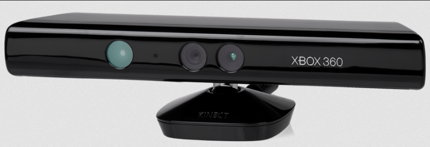
(Image taken from [1])
I bought the enhanced Kinect One on the used market and modified the proprietary connector to USB-3.0.
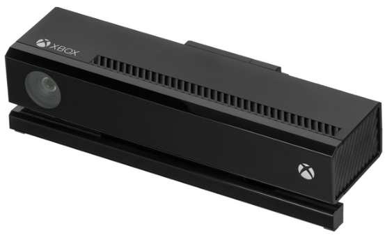
(Image taken from [2])
Together with the ROS (Robotic Operating System, version “Melodic Morenia”) I was able to get first scans out of it ca. 2021.
The approach had a lot of drawbacks:
- installing ROS melodic with the libfreenect2 drivers, iai_kinect2 bridge and rtabmap mapping is very involved
- most of the reason is complex academic software that isn’t very well maintained
- it ran only on ubuntu bionic for me and the software versions need to be tightly aligned.
- for this I had an additional hard drive to swap for. Hardware acceleration is tricky to set up.
- there is some incompatibility with libusb, I was experimenting with different power supplies, but always had data dropouts
- a docker container allowed me to run the software on another operating system, but then the libusb issues got worse
- the entire software ran excessively slow
- the camera just doesn’t have a very good resolution.
But during these first experiemnts I learned what goes into 3D scanning, how important good software and hardware support is and how limited the cameras to date still are.
Why
My Use-Cases
Since then a lot of cameras have been introduced to the market. I’ve realized that these cameras are often very specifically tailored to a use-case. When buying such a camera it makes sense to look at the use-case first.
There are a number of extremly useful usecases for 3D cameras. Some typical use-cases I’m interested in are:
Real-Estate Scanning
I’d like to scan a house or appartment and get and accurate enough representation to be able to document the current state, move furnature around, digitally experiment with different placement of furnature and wallcolours and plan renovations.
Furniture-scale scanning
For 3D models of real-estate, but also for modifying games and developing own games I’d like to scan large objects roughly the size of furniture. That includes vehicles and complex shapes such as plants which are hard to model manually.
Full-body scans
It would be nice to be able to make accurate full body scans to track fitness progress and to make game avatars.
Robot Localisation
A depth camera equipped robot could track its own location relative to it’s surroundings in order to be able to know its own position and to be able to react to commands and drive to specific locations such as charging bays.
3D Print Reproduction
Additionally it would be nice if we could scan a medium to small objects, create a mesh and the print that on the 3D printer. This would also come in handy to create ideally measured pieces to fit into existing gaps of projects I’m working on.
Background
Requirements
The reason the cameras are so different is that for each use-case there are vastly different specific requirements that can’t be covered by a single technology.
Gaming
The XBox Kinect, PlayStation EyeToy, Nintendo Wii, HTC Vive were all designed for gaming. Here we need to track Hands and Feet acurately, but low resolution and high power consumption and size is acceptable.
- Requirement: Track People, Hands and Feet
- Resolution: low
- Distance: <5m
- Accurracy: <5cm
- Scan Size: small
Industry Quality Assurance
Industrial cameras such as cameras by SICK have a completly different use-case. They are meant to detect faults in manufacturing or to accurately detect deformed objects on a conveyor belt.
- Requirement: Accurately detect objects and deformation
- Resolution: extremly high
- Distance: <50cm
- Accuracy: <0.1cm
- Scan Size: varies
Real Estate Scanning
Many real estate sites not offer “3D tours” to give potential buyers a look into the properties. Here colour accuracy is important, but the mesh doesn’t have to be that accurate. Devices such as the Matterport Pro are in that field. Sometimes even a 360 Degree camera that produces a spherical panorama is perfectly sufficient.
Additionally the 3d model needs to be provided via the browser to PCs and low-power smartphones so the point cloud or polygon count will be heavily reduced.
- Requirement: Photographic colours, low accuracy mesh
- Resolution: high image, low on mesh
- Distance: 0.5-10m
- Accuracy: +/- 0.5m
- Scan Size: large
Robot Localisation
Here we need low-power and small form-factor. Products like the Oak-D Lite fit the bill. A far cheaper and more accurate, energy efficient and cheaper option for simple robot to gain SLAM (Simultaneous Localisation and Mapping) capabilities are 360 Lidar scanners like the ydLidar X4 or RpiLidar used on entry-grade robotic vacuums.
- Requirement: Monochrome sufficient, medium accuracy distance readings.
- Resolution: meters
- Distance: meters
- Accuracy: +/- 0.5m
- Scan Size: medium
3D Print Reproduction / eCommerce
For reproducing small objects for 3D printing a very low-range high-accuracy camera with no colour is sufficent. Here the Creality CR-Scan or Revopoint Inspire 3D scanners are among the best options.
For small online shops and eCommerce the requirements are similar. Industrial hardware stores may need highly accurate cameras.
McMaster-Carr provides accurate 3D-CAD-Models of most of their products free to download [9]. It looks like the CAD models were either provided by the manufacrurers or handmade in CAD applications rather than scanned.
- Requirement: accurate low-scale reproduction
- Resolution: millimerts
- Distance: centimeters
- Accuracy: +/-0.1cm
- Scan Size: very small
Landscape
For landscapes and caves we might resort to photogrammetry instead. Using two high-quality DSLR cameras and software such as MeshRoom [3] might be more suited.
- Requirement: accurate colour reproduction, medium mesh accuracy
- Resolution: centimeters
- Distance: meters
- Accuracy: +/- 30cm
- Scan Size: very large
Technologies
Additionally there are a number of different underlying techonologies built into the cameras. Some cameras have a built-in inertial measurement unit (essentially a 3D compass + movement sensor), some have GPS tracking, some rely only on images, some have one of many types of depth sensing cameras, some rely only on images shot from differnt angles. There an be an AI chip built-in that can do object recognition to aid in localisation.
We can distinguish between these technological categories [4]:
Structured Light
Here a grid is projected onto the scene that is captured by camera additionally to the actual image. It very common in gaming accessories.
The HTC Vive virtual reality system uses “lighthouses” for this that are mounted to the wall and project an Infra-Red-Grid on top the room that is captuired by the headset.
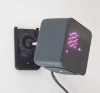
Also the XBox Kinect Sensors apply this technology.
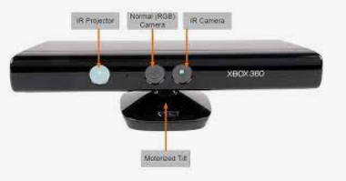
(Image taken from [5])
There exist open-source solutions using off-the-shelf beamers to project such a grid and software [6] to create meshes.
Stereo Vision
Human visual 3D perception is achieved by two eyes at an angle. So intuitively if we place two cameras at an angle we can immitate that effect. Clever software can then take the images and align them to create a Mesh. This is extremly computationally expensive and difficult to set up, lighting conditions make it very fragile, but a very versatile option and often the only option for landscape.
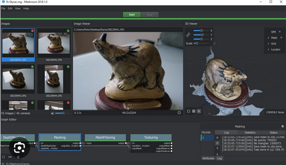
(Image taken from [8])
LiDAR
For simple 2D SLAM mapping of robots a rotating Lidar is often the best option.
It contains a Laser-Distance-Sensor like you’d get from the hardware-store and spins it at 5-10 times per second yielding 2% accuracy in ranges ideal for measuring distances between walls and furnature in homes.
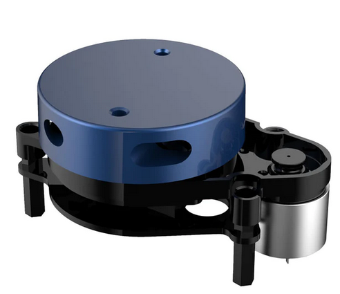
It only produces a 2D map.
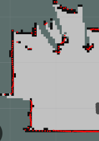
dToF/iToF
Direct-Time-of-Flight-Sensoren (dToF) and Indirect-Time-of-Flight-Sensoren (dToF) are similar and produce pulsing laser light with varying width. The time of arrival of the reflection is then measured by the camera.
Often chips such as the Sony IMX570 is used. Many of the Luxonis OAK-D Cameras use the IMX378 chip.
How
Turn-Table vs. Freehand scanning
There is an important distinction to make between 3D scanners. Some are build to be moved around an object. These tend to be for scanning large objects. While others are made to remain at a fixed position with the object to scan being placed on a turn table. The later is more for small-scale, but more accurate scans of objects with controlled lighting.
In practice different scanners are more well suited for different scenarios. Unfortunately there is no one-fits all.
Low-Cost Entry-Level Consumer Devices
Based on that information we can exclude some of the common cameras for our use-cases.
- the Kinect v2 wasn’t stable and accurate enough for my use-cases
- industrial scanners are too expensive and too use-case specific
- real-estate cameras like the Matterport devices are too inaccurate, expensive and often tied to cloud provider subscriptions.
- pure photogrammetry is too difficult to set up and too computationally expensive
- the Oak-D is too inaccurate outside of Robot localisation and object detection. For localisation I’d rather use a 360 degree Lidar.
- most of the cameras for 3D printing like the Revopoint devices are too limited in scanning range
There are two consumer entry-grade scanenrs on the market in the 900 Eur range.
Revopoint Range 2
An interesting device that might suite my needs is the “Revopoint Range 2”. I’m not sure what chip it uses as I can’t find and photos from inside the device or schematics online. It could be a custom ASIC or a Sony IMX chip with a special lense assembly to increase the scanning range.
- uses structured light
- costs around 600 Eur and
- scans to a precision of 0.1mm at 40-130cm range
- has a 9-axis IMU
It’s not ideal for robot localisation, but likely suited for scaning furniture, people and small areas in real estate. Provided good enough accuracy multiple scans could be stiched to a full scale scan of a house. The software support seems to be alright, but probably there are only proprietary drivers.
Shining3D Einscan
A direct competitor to the Range 2 is the Einscan.
It also uses structured light with two cameras at an angle and a third camera to pick-up colour. It uses a very similar approach as the Range 2, but relies more on computing power than on-device computation with a purpose built chip.
According to reviews it seems, at least with enough computing power, to perform better than the Range 2. Due to that constraint it is less mobile. The software seems to be ahead as Shining3D also offers much more expensive scanners and uses the same software also for their entry-level scanners.
Technical Details, Beginnings and DIY
In order to 3D scan an object, for every pixel in an image, we need to measure depth information. We then take multiple such RGB-D (red, green, blue and depth values) Images and Software creates a 3D model from it.
Pure Photogrammetry
Two calibrated cameras looking at the same object at different angles can give a perseption of depth. This is much like human vision, but is very computationally intensive and not as accurate as adding depth information.
The above mentioned Meshroom is open-software for that purpose.
(Image taken from [8])
Measuring distance with a Laser Pointer
A laserpointer and a webcam fixed at an angle can measure the distance by simple trigonometry. The concept is so simple that I had played in the early 2000s. Basic trigonometry taught in school is sufficient.
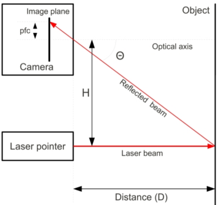
(Image taken from [6])
My application from Sept 2008 can still be run in on WinXP in QEmu on Linux with Visual Basic 6.0 installed that is now freely downloadble on the internet. However finding a WinXP compatible webcam and USB pass-through is a pain to setup and I’d probably rather rewrite the software in something like Python.
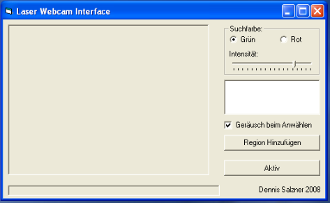
Laser Range Measurement, written Visual Basic 6.0
After all it it only looks for a red or green point in the image, draws a crosshair und measures the pixel-wise distance to reference points to get a relatively accurate measure for distance.
Using laser lines instead of points
Extrapolate the single point range finding with a laser pointer to a laser line and you’ve got a significant improvement.
This is the approach the “David” Laserscanner from the Technical University of Braunschweig takes [10]. The team published a paper and software in 2010.
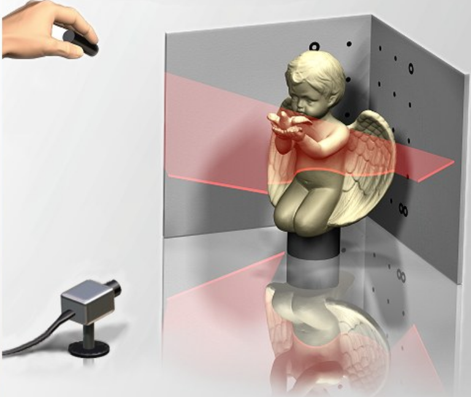
(Image taken from 11)
With a webcam, a line laser as used in construction and a lot of calibration you have a basic 3D scanner.
Using beamers to project grids
Moving closer the structured light the next logical progression is to use a projector to project a grid.
The DAVID SLS-1, from the same research group of TU Braunschweig, built a kit with a modified Beamer from Acer, two industrial cameras, a rig and software.
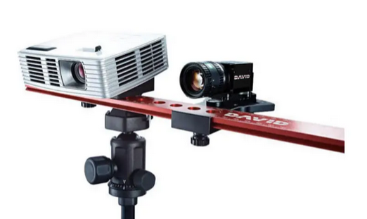
(Image taken from the David SLS-1 Manual, 12)
The rig is not particularly mobile and more for turntable scanning.
Whats great about this is that the software is free and open-source [13] and can and has been [14] extended.
It is expensive. For accurate and fast scans industrial cameras with rolling shutter like the Sony IMX 236 are suggested. The beamer needs to modified for the purpose with the color wheel removed. But all parts would also be reusable for other projects. You can put the color wheel back into the beamer and use it for its intended purpose, like watching a movie, and an industrial camera can also be used for astrophotography, machine learning and more.
There seems to be a group on reddit and telegram dedicated to David SLS scanners. Some DIY budget options use Webcams and cost only 150 USD [17].
Better grid projection
The commercial products “RevoPoint 2” and “Shining3D Einscan” both use the VCSEL (Vertical cavitiy surface emitting laser) to project a grid. The “Kinect 2”, from what I can tell, seems to be do something similar, but with an IR-LED arrangement. The HTC Vive Lighthouses use a spinning disk infront of an IR-LED.
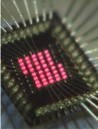
(Ricoh VCSEL Array, Image taken from 15)
These Laser-Arrays are very small and energy efficient.
Of course there is a whole row of patents on this obvious technological step, that I hope won’t block future development and drive prices.

(VCSEL Scanner Patent, Image taken from 16)
From the image it looks very much like what would be inside the Shining 3D Einstar and Revopoint Range 2 scanners.
Progress
Conclusion
I’m now investigating in two directions: Perhaps a DIY David SLS scanner, expensive and hard to calibrate, stationary, but extensible, better results and interesting reusable parts.
Or an entry-level scanner like the Shining3D Einstar. Also expensive considering its single purpose, but mobile and pre-calibrated. Would become a paperweight as soon as a better scanner comes to market.
1] https://upload.wikimedia.org/wikipedia/commons/thumb/6/67/Xbox-360-Kinect-Standalone.png/1920px-Xbox-360-Kinect-Standalone.png 2] https://upload.wikimedia.org/wikipedia/commons/f/f6/Xbox-One-Kinect.jpg 3] https://alicevision.org/ 4] https://www.framos.com/de/fachartikel/what-are-depth-sensing-cameras-and-how-do-they-work 5] https://www.allaboutcircuits.com/news/teardown-tuesday-microsofts-xbox-360-kinect/ 6] https://github.com/jakobwilm/slstudio 7] https://www.researchgate.net/figure/Distance-measurement-system-using-a-camera-and-a-laser-pointer-H-is-the-distance-between_fig7_221967624 8] https://peterfalkingham.com/2018/08/11/photogrammery-testing-14-alicevision-meshroom/ 9] https://www.mcmaster.com/cad-models/ 10] https://de.wikipedia.org/wiki/David-Laserscanner 11] https://de.wikipedia.org/wiki/David-Laserscanner#/media/Datei:DAVID-LASERSCANNER_start_screen.jpg 12] https://manuals.plus/de/david/sls-1-structure-light-3d-scanner-manual 13] https://github.com/jakobwilm/slstudio 14] https://github.com/fablabnbg/3D-Scanner-Turntable 15] https://www.ricoh.com/technology/tech/038_vcsel 16] https://patents.google.com/patent/US10007994B2/en 17] https://www.reddit.com/r/3DScanning/comments/n6eb0n/diy_3d_sls_scanner/